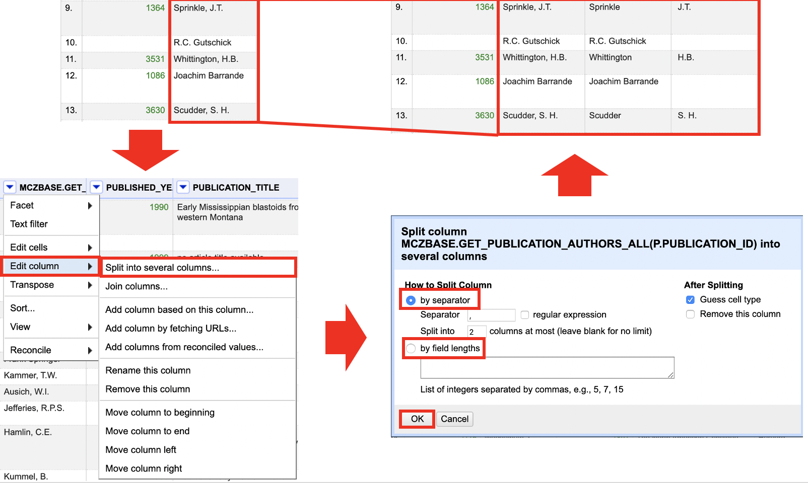

Chapter 2 Data Cleaning with OpenRefine
Cleaning data is required before it can be analyzed. To provide consistent data, data cleaning identifies mistakes and corrects formatting. This procedure must be done with extreme caution since without clean data, analysis results may be inaccurate and non-reproducible.
OpenRefine is a robust free and open source tool for dealing with untidy data, such as cleaning it and converting it to a different format.
This course will show you how to use OpenRefine to successfully clean and format data while keeping track of any changes you make. Many users say that using this program saves them months of time compared to doing these modifications by hand.
2.1 Layout
Once you have imported your data, it is important to familiarize yourself with OpenRefine’s layout.
- In the top right corner there are three buttons:
- “Open…” returns you to the home screen where you can select projects.
- “Export” opens a dropdown menu of options to export your data.
- “Help” opens the OpenRefine User Documentation in a new tab in your browser.
- Below the bolded header stating how many rows/records there are two options:
- “Show as” allows you to change the grid view between rows and records. For more information on the difference between rows and records, see the explanation of Records and Rows below.
- “Show” allows you to change the number of rows/records visible in the grid view.
- In the center of the page is your data in the grid view, which looks similar to Excel. Features of the grid view include:
- Column headings with dropdown arrows for chosing functions
- Row/Record numbers and alternate row/record shading
- Selectable flags and stars
- On the left, there is a pane with two tabs:
- b”Facet/Filter” allows you to work on selected sections of your data, including faceting, clustering, and filtering.
- “Undo/Redo” tracks and stores your history, allows you to undo or redo transformations, and export a JSON file of your transformations.
2.2 Records and Rows
There are two settings for the grid view in OpenRefine: rows or records.
The difference between rows and records is that “rows” display your data in individual lines, each numbered separately, while “records” display your data in multi-line groupings depending on the relationships between the data in those lines. For example:
This data has been transformed using “split multi-valued cells” on the author field to separate different authors into their own lines. On the left, the data is displayed as “records,” showing the different lines with the multiple authors grouped together. On the right, the data is displayed as “rows,” showing each of the multiple authors as a separate line.
NOTE: Take caution when permanently renumbering rows or records and be aware of what setting you are viewing your data under.
2.3 Changing the Grid View
You can adjust the grid display in numerous ways to make it easier to compare, analyse, and associate data columns. Some adjustments can be permanent or non-permanent, and they can help you organize your data better overall.
2.3.1 Permanent Changes
Rearranging columns, eliminating columns, and/or renaming columns are all permanent modifications to the grid view.
Although the instructions in Reordering Columns can be used to reorder and remove columns, this method produces the same effects for modest, rapid changes.
- Go to the column you would like to rearrange or remove and click the arrow button on the column header.
- Select the “Edit columns” option and choose the option that best fits from the dropdown:
- Remove this column
- Move column to beginning
- Move column to end
- Move column left
- Move column right
Changes to the column name can be done in a few simple steps:
- Go to the column you would like to rename and click the arrow button on the column header.
- Select the “Edit columns” option and click on “Rename this column.”
- Change the column name in the pop-up window and click “OK.”
NOTE: In your tracked history, changes to column order or name, as well as the removal of columns, are logged as transformations. Follow the instructions in History and Undo/Redo to undo moving a column.
2.3.2 Non-Permanent Changes
Collapsing columns in one of four ways is a non-permanent alteration to the grid view: collapsing the current column, all other columns, all columns to the left of the current column, or all columns to the right of the current column.
- Go to the column you would like to change and click the arrow button on the column header.
- Select the “View” option and pick the best option from the dropdown:
- Collapse this column
- Collapse all other columns
- Collapse all columns to left (see second image below)
- Collapse all columns to right
- The collapsed column(s) are replaced by a narrow placeholder.
- To reopen collapsed columns, click on the placeholder.
NOTE: Collapsing columns does not permanently delete columns from your data, it only hides the selected columns from view. To permanently delete columns, follow the instructions in Reordering Columns.
2.4 Data Mining and Discovery
OpenRefine includes a number of tools that allow you to quickly search, organize, and contextualize your data without having to go through it manually. Facets and filters based on data type (text, numeric, or date) can be used to sort, arrange, and contextualize your data for better discovery and analysis while maintaining the data’s original structure.
- Reordering columns Reorder your columns for better contextualization or to prepare for further transformations.
- Sorting Data Arrange your data according to defined order within one or more columns.
- Text Based Discovery Search, narrow, and isolate data based on textual information.
- Number and Date Based Discovery Search, narrow, and isolate data based on numeric and date information.
2.4.1 Reordering Columns
OpenRefine allows you to reorder your columns for better contextualization or to prepare for further transformations of your data. To reorder columns:
- Go to the first column, labeled “All,” and click the arrow button on the column header.
- Select the option “Edit columns” and then choose “Re-order/remove columns.”
- In the pop-up window, click and drag the column titles into the order in which you would like them to be displayed or drag them to the far right to remove the columns.
Helpful Tips:
Reordering columns can be useful when preparing to combine column data or to rearrange columns after splitting column data
2.4.2 Sorting Data
OpenRefine has a “Sort” feature that works similarly to Excel’s sorting. This function allows you to arrange your data in one or more columns in a certain order. #### Sorting by One Column 1.
- Go to the column you would like to sort by and click the arrow button on the column header.
- Select the “Sort” option.
- In the pop-up window, select the criteria and order you wish to sort by and select “Ok.”
- The order of rows/records will change in the grid view according to your selections
Helpful Tips:
- The “Sort” function does not permanently change the order of your rows/records, only the order you view them in. This can be checked by looking at the row/record numbers at the left of the grid view.
- The order of your rows/records can be permanently changed by selecting “Sort” at the top of the grid view and choosing “Reorder rows permanently.”
- The “Sort” function can be removed by selecting “Sort” at the top of the grid view and choosing “Remove sort.”
2.4.2.1 Sorting by Multiple Columns
- Follow steps 1-4 above for your first sort.
- Do not remove the first sort, but choose your second column and repeat steps 1-2.
- In the pop-up window DO NOT select the “Sort by this column alone” option and select “Ok.”
- The order of rows/columns will change in the grid view according to your first sort and then within that, according to the second sort
Helpful Tips:
- If you have applied multiple sorts, you can remove each one individually or as a group. This can be done by selecting “Sort” at the top of the grid view, hovering over the sort title you wish to remove, and selecting “Remove sort.”
2.4.3 Text Based Discovery
2.4.3.1 Text Facet
Faceting allows you to quickly view unique values in a column, make edits to those values, and narrow your display to show results containing a specific facet.
To display facets:
- Go to the column you would like to analyze and click the arrow button on the column header.
- Choose “Facet” from the drop-down menu, and then select “Text facet.”
- A facet window will appear in the pane to the left side of the grid view.
2.4.3.2 Text Filter
The text filter option works like the “Find” function in Excel, allowing you to search a column for values containing a specific string.
To display the text filter function:
- Go to the column you would like to search and click the arrow button on the column header.
- Choose “Text filter.”
- A window with a search box will appear in the pane to the left side of the grid view.
2.4.4 Number and Data Based Discovery
2.4.4.1 Changing the Cell Format
- When you import a project into
OpenRefine, the cells will automatically be given a format: text, number, or date. To change this format:
- Go to the column you would like to change the format of and click the arrow button on the column header.
- Choose “Edit cells” and then select “Common transformations.”
- Under “Common transformation,” choose the desired format.
Helpful Tips:
-Columns with values in green are either in date or number format. This makes it easier to identify what types of facets and filters you can use.
2.4.4.2 Numeric Facet
- The Numeric Facet allows you to sort columns with numeric values and to use a sliding scale to adjust the range of number values displayed in the grid view. To display this facet:
1.Go to the column you would like to facet and click the arrow button on the column header. 2. Choose “Facet” and then select “Numeric facet.” 3. A window with a sliding scale will appear in the pane to the left side of the grid view.
Helpful Tips:
- The “Numeric Facet” function is useful for narrowing data to exclude outlying numeric values.
- This function can also be used to isolate high or low values.
2.4.4.3 Timeline Facet
- The Timeline Facet allows you to sort columns with date values and to use a sliding scale to adjust the range of date values to displayed in the grid view. To display this facet:
- Go to the column you would like to facet and click the arrow button on the column header.
- If the data is not read as “dates”, it needs to covert this column to dates. See the explanation of Common transformations.
- Choose “Facet” and then select “Timeline facet.”
- A window with a sliding scale will appear in the pane to the left side of the grid view.
Helpful Tips:
The “Timeline facet” function is useful for narrowing data to exclude outlying date values. This function can also be used to isolate specific dates, times, or date ranges.
2.5 Data Preparation and Normalization
2.5.1 Common Transformations
OpenRefine has a number of functions for performing typical data transformations. Many of these changes are for data cleansing and may be done with regular expressions as well. To locate these transformations:
- Go to the column you would like to make edits to and click the arrow button on the column header.
- Select the “Edit cells” and then “Common transforms” options.
2.5.2 Removing Duplicates
Your data may contain duplicate information that should be removed from the dataset.
NOTE: For optimal results, make sure you’re in ROW mode.
- Sort the column with duplicates using the sort function. See the Sorting Data section for sorting instructions.
- Choose “Sort” and then “reorder rows permanently” after you’ve sorted the column.
- Select the duplicates column and click the arrow button in the column header.
- Select “Edit cells” followed by “Blank down.”
- If two rows succeeding each other have the identical information, “Blank down” will detect it. If they do, the cell values in the second row will be eliminated and the second row will be “blanked out.”
- After you have used the “Blank down” function, use the “Facet by blank” to identify rows with blank cell values for that column.
- From the facet window, select the “true” option.
- Go to the column labeled “All” and click on the arrow button, then select “Edit rows” and choose “Remove all matching rows.”
- All rows with the identified duplicates will be removed. To restore the full data view, simply reset the facets
Helpful Tips:
- It is important to make sure that all cells in the column you are applying this transformation to have values. If there are cells that were originally blank before applying the “Blank down” function, they will be deleted along with the duplicate rows.
- It is important to be aware that the entire row of values will be deleted along with the duplicate value in a given column. Be careful and check before deleting rows or applying the “Blank down” function to make sure that data meant to be kept is not accidentally deleted.
2.5.3 Splitting Cell Values
You can come across columns that have a lot of data clumped together. OpenRefine has numerous options for separating these pieces of data into more meaningful divisions, such creating new columns or creating a multi-row record.
2.5.3.1 Creating a New Row Based on a Separator
NOTE: Before starting this process, make sure to reset all facets on the column you want to work with.
- Click the arrow button on the column header next to the column you want to split.
- Choose “Split multi-valued cells” from the “Edit cells” menu.
- Type the separator (usually a semicolon, comma, or other special character) in the pop-up window and click “OK.”
- Cells having separator values will be divided into different rows according to those separators.
Note: The new rows will be part of the same record as before. See the Layout section for further information on rows and records.
2.5.3.2 Creating a New Column Based on a Separator or Field Length
- Go to the column you would like to split and click the arrow button on the column header.
- Select the “Edit column” option and choose “Split into several columns.”
- In the pop-up window, select the method by which you would like to split the column:
- “By separator” allows you to input the separator value (often a semi-colon, comma, or other special character) as well as to limit the number of additional columns are created.
- “By field lengths” allows you to input a string of integers to indicate where in the original column value you would like OpenRefine to split the values. For example: i. A column contains dates in the YYYY/MM/DD format. You wish to divide this into three columns (Year, Month, Day). Under “by field lengths,” use the list “4, 1, 2, 1, 2” indicating “year, slash, month, slash, day.” The result will be five columns, two with only slashes which you can remove, and three with the Year, Month, and Day respectively.
- When you have selected and identified all your criteria, select “OK.”

Helpful Tips:
The new columns will be named after the original column from which they were built. You can change the column titles by going to the column header, clicking the arrow button, selecting “Edit column,” and then selecting “Rename this column.”
This transformation is useful for splitting data into manageable chunks for analysis. Information such as addresses, dates, and people could be included.
2.5.4 Combining cell Values
In OpenRefine 3.3, you can merge data from different columns. You can use this technique to combine the contents of two columns, add a certain string or characters to the values of a column, or do both. There are various methods for combining data from different columns. Introduce two fundamental functions for combining data:
- Joining columns
- Concatenation
2.5.5 Data Shaping
OpenRefine has functions that allow you to reshape your data by transposing information between rows and columns in order to see it in a new way.
2.5.5.1 Rows into Columns
To transpose rows into columns:
- Go to the column with the data you would like to separate into different columns.
- Click the arrow button in the column header and select “Transpose.”
- Select “Transpose cells in rows into columns
- In the pop-up window, enter the number of rows you would like to transpose and click OK. NOTE: If you enter “2,” OpenRefine will create two columns, pulling cell values from rows in sets of two. For example: (Row 1, Column A) and (Row 2, Column A) will become (Row 1, Column A) and (Row 1, Column B) respectively.
5. Click “Transpose.”
Helpful Tips:
- If there are specific columns you would like to transpose into rows, consider moving them next to each other by following the instructions for Reordering Columns.
- Since transposing columns to rows does not preserve record associations (see Records and Rows), make sure you have a unique identifier column not being included in the transformation. This way, when you select “Fill down in other columns.” the unique identifier can be used to associate related data.
- All transformations of columns into rows are tracked in the Undo/Redo tab, so you can experiment with transposing columns into rows until you are comfortable with the result.